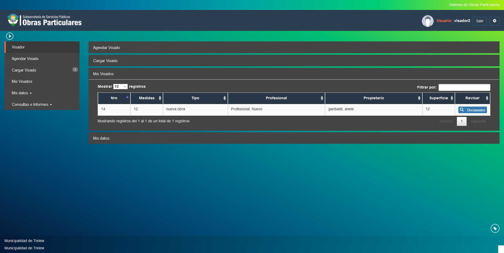

Mis visados¶
Esta opcion permite realizar un seguimiento de sus visados por tramite. Las opciones a visualizar son las siguientes:
- Nro: Indica el numero del tramite a agendar.
- Fecha Inicio: Indica la fecha de inicio del tramite a agendar.
- Tipo: Indica el tipo del tramite.
- Profesional: Indica el profesional a cargo del tramite.
- Propietario: Indica el propietario del tramite.
- Superficie: Indica la superficie ocupada por la obra en curso.
Puede revisar la documentacion del tramite seleccionado haciendo click en el boton documentos.
